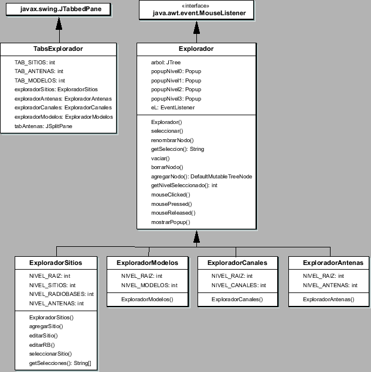
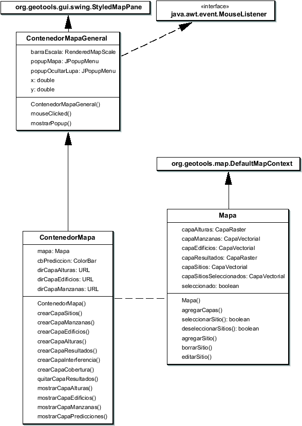

Siguiente: El paquete archivos
Subir: Arquitectura de paquetes
Anterior: El paquete predicciones
Índice General
Mediante este paquete se provee una interfaz gráfica que interactúa
directamente con el usuario del software. Se buscó que la misma sea
amigable para el usuario y fácil de usar.
Como se dijo anteriormente, los dos elementos más importantes que
conforman la ventana principal del programa son el explorador y el
mapa. La implementación del explorador se hizo mediante la
estructura de clases que se muestra en la figura
8.11.
Figura 8.11:
Diagrama parcial de clases del paquete
ifusuario
|

|
El mapa está constituido por la siguientes capas:
- Capa de alturas de terreno
- Capa de manzanas
- Capa de edificios
- Capa de sitios
- Capa de sitio seleccionado
- Capa de resultados
En el caso del Generador de Edificios se define un nuevo mapa, que
carece de la capa de alturas y de sitios e incluye capas destinadas
al edificio, la cuadra y la esquina seleccionados.
Existe una clase que es la encargada de la manipulación de las
capas, que se llama ContenedorMapa. Esta clase interactúa con
los otros paquetes, de los que puede recibir información (una
FeatureCollection, una lista de sitios, los resultados de una
predicción, etc.) y a partir de ella crear la capa correspondiente
en el mapa (ver figura 8.12).
Figura 8.12:
Diagrama parcial de clases del paquete
ifusuario
|

|
Tanto el ContenedorMapa como el Explorador pueden generar acciones
por sí mismas como reacción ante eventos provocados por el usuario
mediante el ratón; para ello deben implementar la interfaz
java.awt.event.MouseListener.
El sub-paquete ifusuario.menues contiene las ventanas y
menúes que intercambian información con el usuario. Por ejemplo, las
ventanas que permiten la creación o edición de objetos (canales de
frecuencia, modelos de antenas, sitios, radiobases, antenas, etc.).
Éstas recogen la información que ingresa el usuario y chequean que
sea válida, por ejemplo que el formato de los datos sea el correcto
o que no haya parámetros vacíos. En caso de encontrar un error
arrojan una excepción e informan al usuario; en otro caso crean el
objeto correspondiente, que luego es tomado por la clase Principal,
quien continúa con el procedimiento.
Siguiente: El paquete archivos
Subir: Arquitectura de paquetes
Anterior: El paquete predicciones
Índice General
SAPO